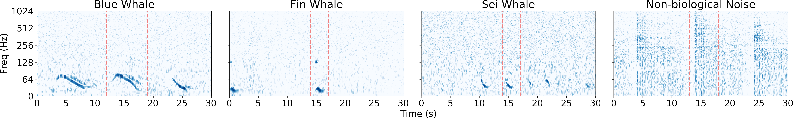
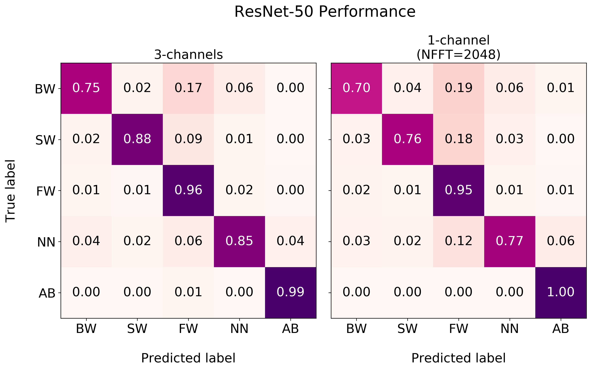
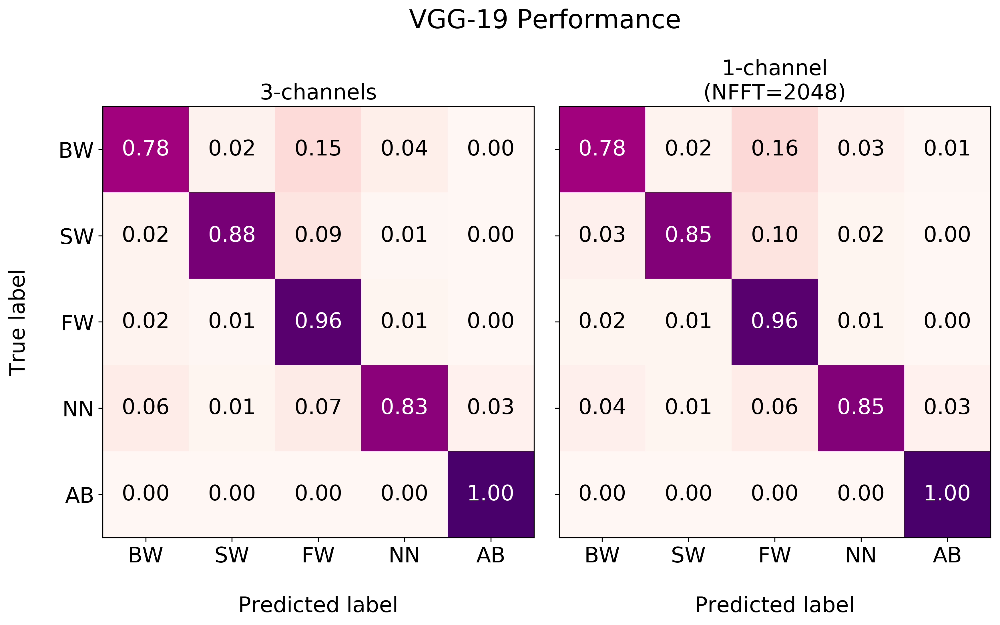
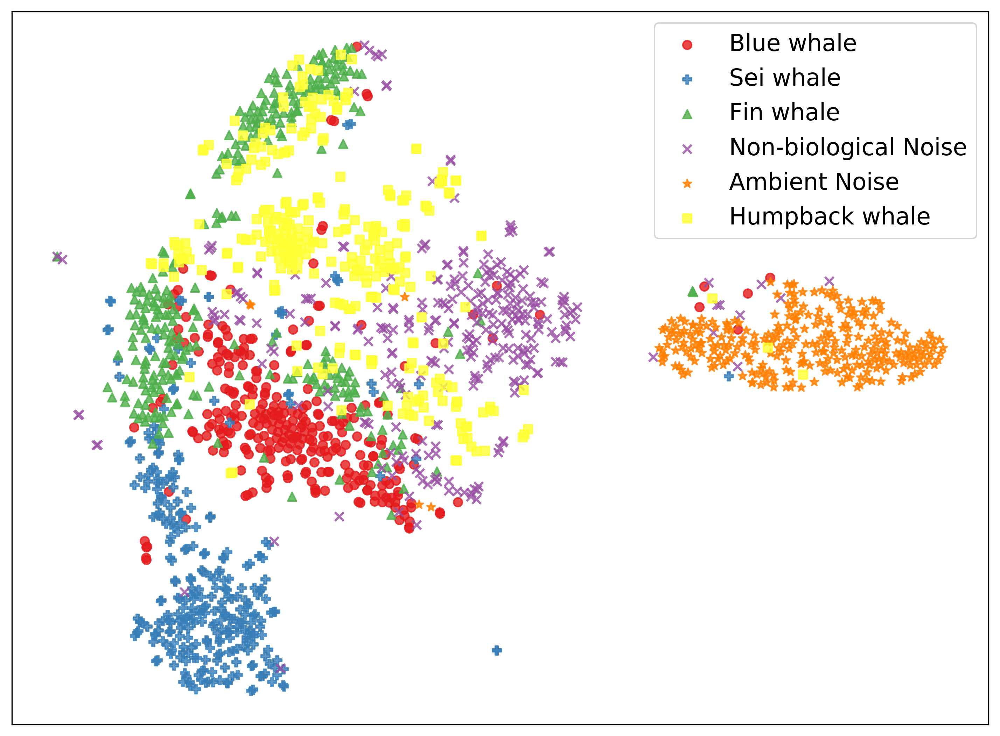

Research Aptitude Defence
Classifying baleen whale vocalizations using convolutional neural networks and a novel acoustic representation
Mark Thomas
May 24, 2019
Presentation outline
- Passive acoustic monitoring → big data
- Detection and classification of marine mammals
- Visual representations of acoustic data
- Data set, experiment setup, and training details
- Experimental Results
- Contributions
- Future work
Passive acoustic monitoring (PAM)
Marine biologists use underwater acoustic data collected via Passive Acoustic Monitoring (PAM) to model behaviour and other characteristics of marine life.
image source: JASCO Applied Sciences
- PAM is non-invasive unlike GPS tagging
- PAM is less susceptible to harsh weather conditions compared to visual surveys
- PAM is often carried out using moored recording devices
- PAM recording devices are typically deployed for months
- Collections of data collected via PAM are very large
- Complete human analysis of PAM data sets is not feasible
Detection and classification systems (DCS)
Large collections of acoustic data collected via PAM has led to increased research into detection and classification systems (DCS)
From a machine learning perspective a DCS is simply hierarchical model...
- detection → A binary classifier determining if a signal of interest is present
- classification → A multi-class classifier for distinguishing between sources
image source: Wikipedia.org
Problem statement:
We are interested in detecting the presence/absence of three species of endangered baleen whales (mysticetes)
- Blue whales (Balaenoptera musculus)
- Fin whales (Balaenoptera physalus)
- Sei whales (Balaenoptera borealis)
Classifying marine mammal vocalizations
-
Traditionally, the algorithms used to develop a DCS for marine mammal vocalizations are derived from the properties of the signals of interest and can be separated into two categories:
- Comparing unlabelled data to templates of certain vocalizations
- Detect regions of interest (ROIs), extract features, and then classify
-
It is difficult for these systems to generalize to other sources:
- Templates are specific to different types of vocalizations produced by the same species
- The algorithms used for detecting ROIs may depend on the noise characteristics of the data
- Recently researchers have attempted to develop more generalizable systems using Convolutional Neural Networks (CNNs)
Methodology
We also use CNNs but we are focused on endangered baleen whales that produce vocalizations much lower in frequency.
Visual representations of acoustic data
- Marine biologists make use of spectrograms when annotating acoustic recordings
- The vast majority of related work attempt to detect/classify vocalizations within spectrograms
-
A spectrogram is a visualization of the magnitude-squared of a digital signal computed using a Short-time Fourier Transform (STFT):
$$X(n,\omega) = \sum_{m=-\infty}^\infty x[m]w[m-n]e^{-j\omega m}$$
-
Because humans perceive pitch non-linearly, it is useful to also generate spectrograms on a "mel-scale":
$$\omega_{mel} = 2595\log_{10}\left(1 + \frac{\omega_{Hz}}{700}\right)$$
Visual representations of acoustic data (cont.)
- In order to generate the spectrograms above, one has to decide on a set of parameters to provide to the STFT
-
In practice, marine biologists will often use different parameters depending on the species they are interested in
- The parameters of the STFT determine the time/frequency resolutions of the spectrogram
- Some species make low-frequency prolonged calls and other make shorter
- Depending on the resolution, a vocalization may be difficult to classify
Novel representation
To exploit the strategy used by experts during annotation, we employ a novel representation, by:
- Generating multiple spectrograms using different STFT parameters
- Interpolating the spectrograms such that they share the same dimensions
- Stacking the interpolated spectrograms to form a multi-channel tensor
Acoustic recordings

The acoustic recordings used in the development of our DCS were ...
- Collected by JASCO Applied Sciences using Autonomous Multi-channel Acoustic Recorders (AMARs) at a 8kHz sampling rate
-
Analyzed by marine biologists producing annotations pertaining to whale vocalizations and other sources
Source Label Training Validation Test Blue whale BW 2692 601 574 Fin whale FW 15,118 3244 3272 Sei whale SW 1701 332 383 Non-biological NN 2078 449 398 Ambient Noise AB 21,589 4626 4627
Training details
- The data used in training/testing the classifiers were generated in the following way:
- Each annotation was centred within a 30 second "excerpt" from the original recording
- A 10 second "sample" containing the annotation was randomly selected from the excerpt
- A spectrogram was produced corresponding to the CNN that was being trained
- For the ambient class a random selection was made from an entire recording known to not contain baleen whale vocalizations
- The sampling process was carried out in parallel on the CPU while the CNN trained on the GPU → data augmentation
- There were 5 different CNNs (per-architecture) corresponding to the STFT parameters
- Three trained on spectrograms with FFT window lengths of 256, 2048, and 16384 samples
- One trained no mel-scaled spectrogram using an FFT window length of 2048 and 128 mels
- One trained on a 3-channel version of the novel representation
Training details (cont.)
- CNNs were implemented in Python using PyTorch [5]
- Each CNN was trained using a batch size of 128
- Stochastic Gradient Descent (SGD) was used to optimize a cross-entropy loss
- The initial learning rate was set to 0.001 and 0.01 for ResNet and VGG, respectively
- The learning rate decayed exponentially by a factor of 10 every 30 epochs
- Each CNN was trained for 100 epochs
- After each epoch the validation set was evaluated to maintain the best model
Experimental results
ResNet-50 Performance
| NFFT | Accuracy | Precision | Recall | F-1 Score | |
|---|---|---|---|---|---|
| 3-channels (Hz) | - | 0.953 (±0.016) | 0.887 (±0.045) | 0.871 (±0.036) | 0.878 (±0.031) |
| 1-channel (Hz) | 256 | 0.883 (±0.022) | 0.714 (±0.060) | 0.641 (±0.037) | 0.675 (±0.046) |
| 2048 | 0.944 (±0.009) | 0.863 (±0.036) | 0.838 (±0.039) | 0.850 (±0.023) | |
| 16384 | 0.943 (±0.013) | 0.860 (±0.032) | 0.847 (±0.058) | 0.853 (±0.031) | |
| 1-channel (mels) | 2048 | 0.895 (±0.031) | 0.762 (±0.067) | 0.723 (±0.048) | 0.742 (±0.044) |
VGG-19 Performance
| NFFT | Accuracy | Precision | Recall | F-1 Score | |
|---|---|---|---|---|---|
| 3-channels (Hz) | - | 0.961 (±0.017) | 0.906 (±0.044) | 0.892 (±0.049) | 0.899 (±0.041) |
| 1-channel (Hz) | 256 | 0.914 (±0.024) | 0.790 (±0.048) | 0.771 (±0.070) | 0.780 (±0.053) |
| 2048 | 0.959 (±0.019) | 0.899 (±0.041) | 0.889 (±0.048) | 0.894 (±0.039) | |
| 16384 | 0.951 (±0.017) | 0.871 (±0.037) | 0.878 (±0.038) | 0.875 (±0.028) | |
| 1-channel (mels) | 2048 | 0.918 (±0.022) | 0.818 (±0.043) | 0.784 (±0.036) | 0.801 (±0.034) |
Experimental results (cont.)
Experimental results (cont.)
Generalization to other species
How can we test how well our CNN is able to generalize to other sources of interest?
- Transfer learning using additional instances containing humpback calls
- Freeze the feature extraction layers of the VGG-19 model from before
- Re-train the last two layers using the original training set + 2,100 humpback calls
- Hold out 450 humpback calls for validation and 450 for testing
- Limit the training to only 10 epochs using the same training details as before
Generalization to other species (cont.)
Accuracy = 0.948
Precision = 0.884
Recall = 0.871
F-1 Score = 0.877
Generalization to other species (cont.)
2-dimensional t-SNE [4] embeddings of the final frozen layer before training
Contributions
Paper (In Review)
ECML-PKDD 2019
Würzburg Germany, Sept. 2019
Poster
CIFAR Deep Learning Summer School
Edmonton AB, July. 2019
Oral Presentation
Canadian AI 2019 - GSS
Kingston ON, May 2019
Poster
OceanPredict'19
Halifax NS, May 2019
Oral Presentation
8th DCLDE Workshop
Paris France, June 2018
Future work
- Developing larger models using additional species from various locations
- A lot of research remains to be done with respect to the novel representation
- detailed analysis of effect each channel has on the final prediction
- varying more than just the FFT window length
- apply the representation to another domain (acoustic scene classification)
- alternative interpolation methods
- Applying different architectures that learn directly from the waveform
- Unsupervised learning of acoustic signatures → own-ship noise
Thanks to...
- JASCO Applied Sciences for the opportunity to work on this project
- The NSERC Engage program for funding this work
- Dr. Bruce Martin for his input and guidance with respect to all things acoustics
- Katie Kowarski for her expertise in marine mammals and their vocalizations
- Briand Gaudet for his help processing the data
- Dr. Stan Matwin for his continued encouragement and support
Thank you for listening!
 |
 |
 |
References
-
Deep residual learning for image recognition
K. He, X. Zhang, S. Ren, and J. Sun
Proceedings of the IEEE conference on computer vision and pattern recognition, pp. 770–778 (2016) -
Classification of cetacean whistles based on convolutional neural network.
S. Liu, M. Liu, M. Wang, T. Ma, and X. Qing
In IEEE 10th International Conference on Wireless Communications and Signal Processing, pp. 1-5 (2018) -
Convolutional neural network for detecting odontocete echolocation clicks
W. Luo, W. Yang, and Y. Zhang
The Journal of the Acoustical Society of America, 145(1):EL7–EL12 (2019) -
Visualizing data using t-SNE
L.v.d. Maaten and G. Hinton
Journal of machine learning research 9(Nov), 2579–2605 (2008) -
Automatic differentiation in PyTorch
A. Paszke, S. Gross, S. Chintala, G. Chanan, E. Yang, Z. DeVito, Z. Lin, A. Desmaison, L. Antiga, and A. Lerer
In NIPS-W (2017) -
Very deep convolutional networks for large-scale image recognition
K. Simonyan and A. Zisserman
arXiv preprint arXiv:1409.1556 (2014) -
Large-scale whale call classification using deep convolutional neural network architectures
D. Wang, L. Zhang, Z. Lu, and K. Xu
In IEEE International Conference on Signal Processing, Communications and Computing, pp. 1–5, (2018)